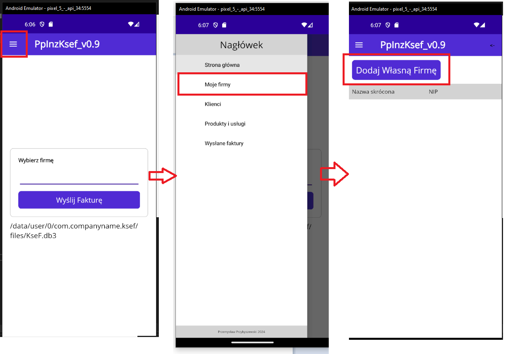
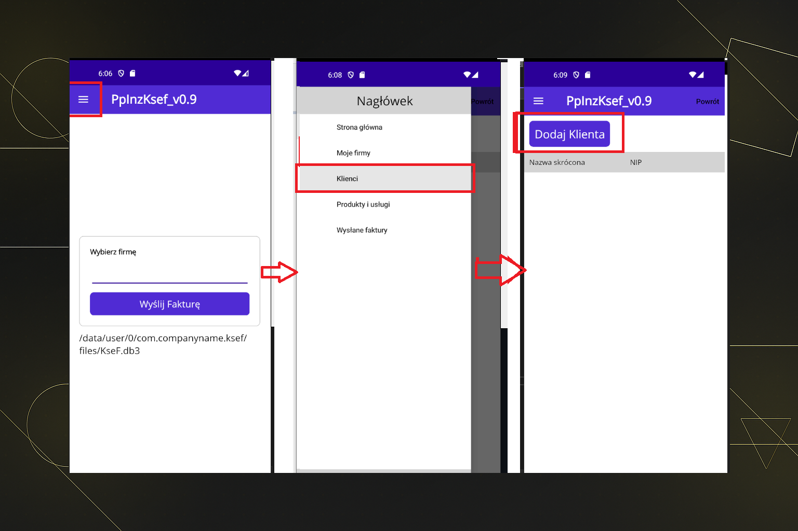
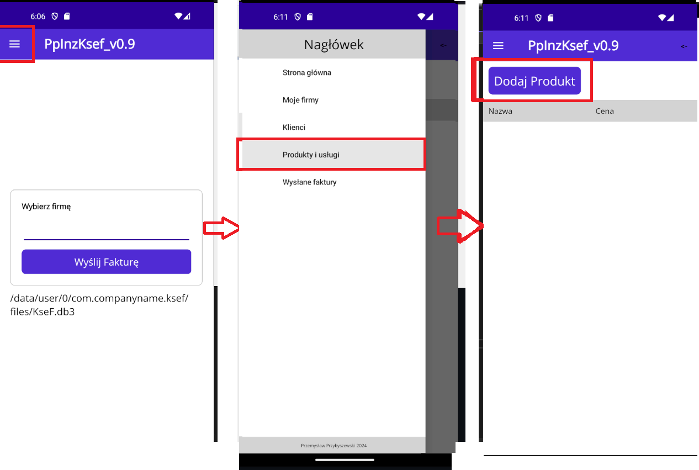
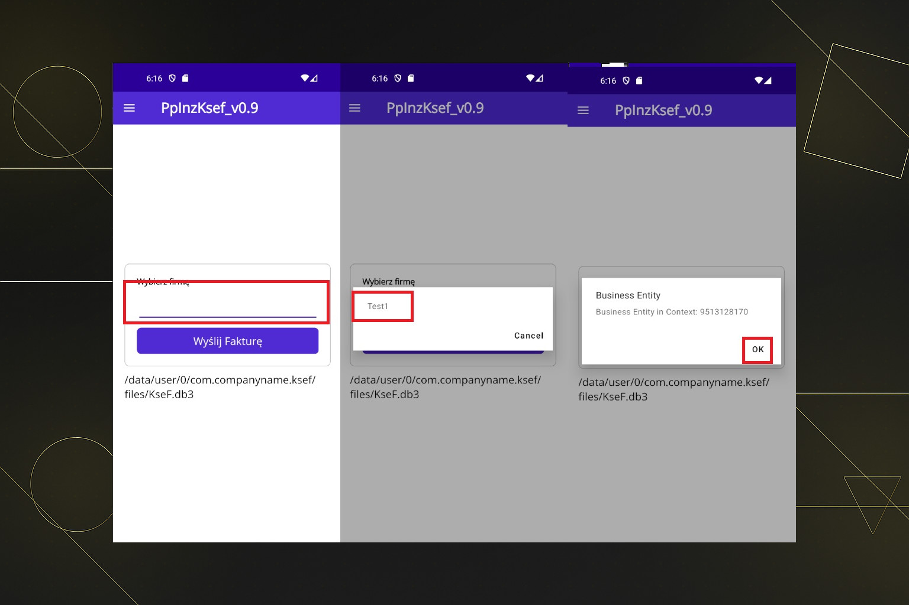
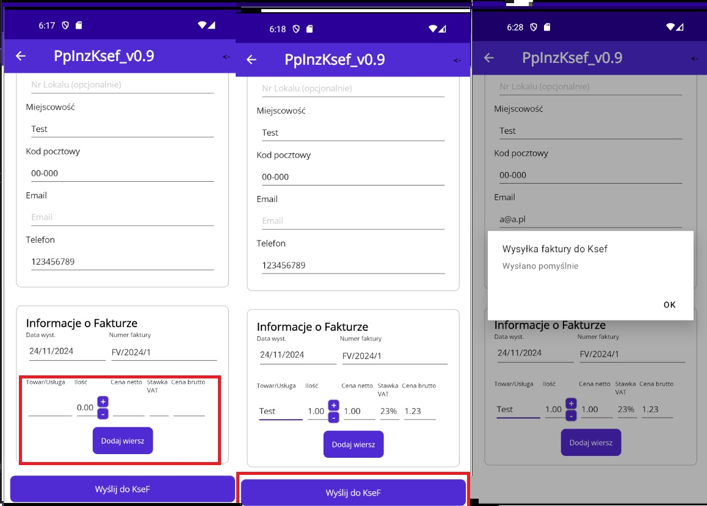
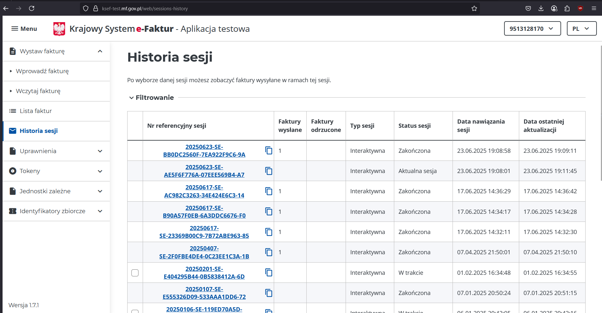

KSeF Mobile App
KSeF Mobile App






Cel aplikacji
Praca inżynierska: system mobilny powiązany z KSeF wysyłek faktur VAT. Aplikacja napisana w .NET MAUI zapewnia sposób na szybkie utworzenie profilu własnej firmy oraz dodania bazy klientów, produktów i usług. Skupia się na prostocie obsługi i pracy w trybie mobilnym.
Technologie
C#
.NET MAUI
REST API
SQLite
KSeF
Plan rozwoju
- MVP: Integracja z systemem KSeF, wysyłka oraz pobieranie statusów faktur.
- Integracja z nową wersją KSeF v2, dostępnej od 08.2025r.
- Nowe UI
- Dodanie profilów użytkownika